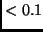
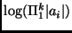
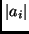

The following section describes each of the programs in the METAL-MLEE in more detail. Note that all programs will accept the -h option that will show an explanation of all valid options and the version and versiondate of the program. The following documentation only contains explanations of those options that are releveant for the use of METAL-MLEE for use with the datamining advisor. For a more complete documentation of the programs see [Petrak 2002a].
The run_exp program performs the follwing tasks for a given base database:
For the error estimation, the input base-database will be randomly shuffled and split into one or more pairs of training- and evaluation data. The program run_exp needs a random seed to control the random shuffling. The random seed defines the exact way how the data is being shuffled and partitioned. This allows to run the program on different machines, at different times, with different learning algorithms and still obtain comparable error estimates and comparable files with predictions.
The program creates a standardized set of output files in the output directory specified (see Section 8).
run_exp -h run_exp -f stem -s seed [-v] ...
The following describes just the subset of options that are important for use in the METAL-setting:
-s seed: The seed to be used for the random number
generator that determines how the data file will be shuffled
before the estimation procedure is being carried out. If
no seed is given, the value 1 will be used. The special value
"norand" will supress random shuffling and keep the ordering
of the database file. This parameter is ignored for estimation
strategy "leave one out".
-regr: Indicate that the database describes a regression
problem (i.e. the target variable is numberic). If omitted,
a classification problem (i.e. the target variable is discrete)
is assumed.
-dt path: The path to the directory that should be used
to store temporary files. Default is /tmp. This
directory must be on a device that has enough free space to
hold all the intermediate files. Note that unless option
-k or -d or -lad is specified,
temporary files should get removed at the end of an experiment.
However due to several reasons the directory can fill up with
leftover files, so be sure to remove unneded ones regularily.
-d: Switch on debug mode: this will show much more information
in the log file and on the console (-d implies -v which will
show everything that goes into the logfile on the console too)
-lad: Switch on debugging for interface scripts.
This will pass the
option -d to all the interface scripts, causing a lot
more output from the interface scripts get logged in the logfile.
run_exp -f stem -s 1 -t 3600This example sets the CPU time limit to one hour. (The default is 43200 seconds, or 12 hours, use the value 0 to unlimit CPU time usage)
Note however that not all OS's support this. Currently this is not possible under Windows. On some systems that do not support this but do support killing processes the coded workaround that tries to kill the process after a specfified number of elapsed (not CPU!) seconds might work, but this is not guaranteed either.
To invoke one or more algorithms for an experiment, give this name of the algorithm as an argument to the run_exp option -l. In order to use more than one algorithm, specify the option -l multiple times, e.g.:
run_exp -f somestem -s 1 -l alg1 -l alg2This example shows how to specify to run algorithms alg1 and alg2.
Instead of specifying the list of learning algorithms every time, you can specify the list to be used as a default in the configuration file config.pm.
Interface scripts both execute the training and the prediction phase of a learning algorithm. In order to specify to which phase the parameter should be passed, you need to specify a ``sub option'':
run_exp -f stem -s 1 -l "alg1 -at -A" -l "alg2 -ae '-r 1.1 -s 2.1' "This example shows how to add the option -A to the call of algorithm alg1 for the training phase and options -r 1.1 -s 2.1 to the testing phase of algorithm alg2. You can use suboption -a to specify what to pass to both the training and the testing phase calls.
You can also use the same algorithm twice with different parameter settings. However for this to work, you also have to specify different algorithm suffices for each of the different calls:
run_exp -f somestem -s 1 -l 'alg1 -at "-c 0.1" -asuf c0.1' -l 'alg1 -at "-c 0.2" -asuf c0.2'This suffix will be appended everywhere the algorithm name is mentioned, i.e. statistics, the log and results file will now contain entries for an algorithm alg1c0.1 and an algorithm alg1c0.2.
Interface programs are used to provide the main experimentation
program run_exp with one standard interface to many different
learning algorithms. In order for this to work, learning algorithms
must fulfill some requirements that are listed in Section 6
which also explains how to adapt and add interface programs for
new learning algorithms.
Interface programs must reside in the same directory as the run_exp.
The follow a simple naming scheme: run_cla_xxx for an interface
program to a classification learning algorithm named xxx and
run_rla_yyyy for an interface program to a regression learning
algorithm named yyyy. To specify a learning algorithm as an
argument to run_exp or in the configuration file config.pm
only the name of the learning algorithm must be given (i.e. xxx or
yyyy only).
All interface programs take the same set of options. For testing
purposes, or when debugging problems encountered during the execution
of run_exp it can be useful to directly run an interface program.
For this, a pair of training and testing datasets and a names file must
exists (i.e. three files with the same filestem and the following extensions:
.data, .test anda .names).
Here are the most important options for manually running an interface script:
-h: Show all possible options and a short explanation.
-istem STEM: The file stem (including the path) that
identifies the three files (data, test, and names file) needed.
When invoked from within the run_exp program the filestem
will usually also include the seed and the process ID to avoid
duplicate file names for the temporaryly created files.
-tmppath PATH: Where to store intermediate or temporary data. This
is currnetly not used by run_exp since the training/test/names
files are stored in the temporary directory anyways and it is easier
to derive other filenames for temporary files directly from this filestem.
-a args: Pass additional arguments to all calls of the algorithm
(training and testing)
-at args: Additional arguments for the training call
-ae args: Additional arguments for the testing (evaluation) call
-cpulimit n: Try to limit the CPU time limit to that many seconds
(might not work on all systems)
-kmodel file: Copy the model to this file
-nopgm dont actually call external programs, for debuggin
-portable/-noportable: Usually the program tries to figure out
how to limit CPU time and how to determine the system/user CPU time
needed for the algorithm on a specific system. The -portable
switch can be used to run (experimental) code that will try to
do everything with Perl-code that is as portable as possible.
Note that portable mode still has its flaws - especially the
termination of processes does not work correctly on most systems.
If the -portable option is used, -cputime limit
will be interpreted as a limit for elapsed runnning time
instead of CPU time.
-k: Do not delete intermediate datasets
-d: Switch on debug mode
-v: Switch on verbose mode
This program will make it easier to extract the interesting information from the files generated for an experiment. The standard files that are normally created are the files ending in the following extensions: =.results=, =.dct=, =.log=, and =.stats= (see Section 8). The =.log= file contains a log of all actions performed and the other three files contain result data (and are often collectively referred to as result files). These three files contain lines of the format:
Some qualified variablename: value
Each line contains a value for a variable. The value is everything
after the colon (a value can be multidimensional, i.e. consist of more
than one word, but usually just is a single word or number).
The variable name is everything before the colon and consist of
several words. The following line gives the value of the error estimate
for algorithm =c50boost= in cross validation fold 2 of repitition 0
in a .stats file:
Error c50boost 0 2: 0.34123110000
The =parse_results= program can be used to extract the values for certain variables and create a file that contains just the values of these variables, separated by commas organized by lines. The program can be used to generate one line for each filestem, one line for each filestem/algorithm combination or one line for each filestem/algorithm/crossvalidation-fold combination or one line for each filestem/pair-of-algorithms combination.
The following example demonstrates how the program can be used to extract different types of data:
% ls allrep_2.dct allrep_2.stats led24_2.results segment_2.dct segment_2.stats allrep_2.results led24_2.dct led24_2.stats segment_2.results % parse_results *.* -f %DS -f %LA -f stats.Error allrep_2,basedef,0.032873806998939555 allrep_2,basedef200,0.032873806998939555 allrep_2,baserand,0.9899257688229056 allrep_2,c50boost,0.009544008483563097 allrep_2,c50rules,0.009278897136797455 ... allrep_2,clemRBFN,0.032873806998939555 allrep_2,lindiscr,0.08510074231177095 allrep_2,ltree,0.008748674443266172 allrep_2,mlcib1,0.024920466595970307 allrep_2,mlcnb,0.05726405090137858 allrep_2,ripper,0.010604453870625663 % parse_results *.* -breakup ds -f %DS -f results.DBSize -f results.N_discrete_attr allrep_2,3772,21 led24_2,3200,24 segment_2,2310,0
parse_results -h parse_results filelist -f fieldspec [-f fieldspec ...] [-breakup ds | la | lapair | foldla] [-o outfile] [-n outnamesfile] [-fn] [-hostnorm] [-algnorm alg] [-s sep] [-m mv] [-mnp x] [-strip] [ignoredc] [-ignoreresults] [-ignorestats]
filelist: The list of files to process. The easiest way to
do this is to use a glob-pattern. For example, if there is a
subdirectory below the current directory for each filestem and
you want to process all results files for all filestems, the simplest
way to specify this is ``*/*.{dct,results,stats}''.
-f fieldspec: This option can occur more than once and specifies
(in order) the list of fields to include in the output. A fieldspec
is either a qualified fieldname, a special fieldname or a function.
A qualified fieldname is of the form filspec.fieldname where
filespec is one of stats, dct, or results
and the fieldname is the name portion of one of the fields that
occur in that file, e.g. dct.Nr_attributes or stats.Error.
The following special field names canbe used: %LA the name
the learning algorithm (not for breakup=ds); %DS the filestem as
extracted from the file processed (i.e. this will usually include the
seed and eny suffixes - the 'true' filestem
can be extracted using results.Filestem or results.InFilestem;
%FLD the fold number (only for breakup=foldla); %REP
the repeat number; %LA1 and %LA2 the names of both learning
algorithms for breakup=lapair.
Functions must get specified in the form NAME(arg). The following
functions are currently defined: AVG, SUM, COUNT,
MIN, MAX will all calculate the corresponding function
over all fields that match a regular field name pattern. For example to
find the maximum value for all fields with a name that starts with
Attr_Count_All_Value in the dct file, use 'MAX(dct.Attr_Count_All_Value.*)'. Note that the pattern must be a Perl-type regular expression,
not a glob pattern. This featrue cannot be used to calculated
functions over qualified variable names, e.g. 'MAX(results.Traintime.*)' with breakup=ds will not work. The function ACC(field) will
calculate 1-field.
-breakup x: Specify for which level of detail the program
will create individual lines in the output.
the default is la, which produces one line for each combination
of filestem and learning algorithm. The option lapair will
generate one line of output for each combination of filestem and
pairs of learning algorithms,
ds generates one line of output for each filestem and
foldla generates one line for each combination of filestem,
learning algorithm and crossvalidation fold
-o filename: Specify a file where to write the output
to (if not given: standard output).
-n filename: Specify a file where to write a C4.5 names
file for the output - the program will try to guess the type and
possible values of attributes and will also try to convert
field names to something that is usable with most learning algorithms
that use C4.5 format. Note that the generated file will just
contain a line for each field in the output and is thus not
directly usable for C4.5 (for this you need to remove the line
for the last field and add a class label definition line at the
beginning instead).
-fn: include a line with fieldnames as the first line of
output - this is useful for many programs that can process CSV files
(e.g. R).
-hostnorm file -algnorm alg: Specify the name of a file that contains
host normalization data. All fields continaing the string ``time''
will then automatically get normalized based on the timing factors
for each host. If algnorm alg is given, the times will
be expressed as a multiple of the time the algorithm alg needed.
For more information on time normalization see the next section.
-s sep: Use sep to separate fields instead of commas
-m mv: Use mv instead of a question mark to indicate
missing values.
-mnp x: Use x instead of mv to indicate a value
for which no field has been found in the input files.
-strip: Strip strange characters from all non-numeric output.
This can help to make the output more easily digestable by other programs.
-ignoredct, -ignoreresults, ignorestats: Do not process the corresponding files. This can speed up processing significantly.
The METAL-MLEE package is intended to simplify the process of
obtaining machine learning experimentation results that possibly
get carried out on different hosts. The run_exp script
collects the timing information returned from the interface scrips and
puts them into the .results file.
However, CPU time measurements obtained on different hosts are
not comparable. The task of parse_times is to analyze the
experimentation results that were obtained on different machines
for the same dataset, using the same seed and algorithms.
From the times measured on different machines, the program will
create a table of factors which roughly represent the relative
performance increase or decrease relative to one reference host.
The table generated can then be used by the parse_results
script normalize all time measurements to the reference machine.
WARNING: this feature should be used with extreme caution! You should be aware that the factor can only be used as a very rough aproximation to the speed differences between two machines. Several factors make this approach rather inaccurate:
parse_times program will ignore all time
measures .
parse_times -host hostname -from YYYYMMDD -to YYYYMMDD [-calc avg | last | median] [-xlispstat filename] filelist
filelist A list of .results. files to process, each
containing timing information for the same set of learning algorithms
on the same dataset.
-calc x What to do if several measurements for the
same algorithm and host are found (this will be the case if the
experiment gets repeated on the same machine and the run_exp
option -o is not given, causing all results to get
appended in the same file instead of overwriting old results).
Possible values are: avg - calculate the average; median -
calculate the median; and last - use the last (most recent)
value found.
-xlispstat filename write data for subsequent processing
in XLISPSTAT or LISP to this file.
-from YYYYMMDD -to YYYYMMDD: The generated table will
contain this date
as the date identifying the start and end
of the validity period for the factors.
Since machines can get upgraded or other things can change significantly
over time that will influence the speedup factor, you can restrict the
validity of the factor to a certain time period. The parse_results
program will automatically use the factor from the correct time period
based on the experimenation date found in the results files.
The script check_database.pl will check the format of a
database for compliance with the standard database
format needed by METAL (see
Section 4).
Note that unless you specify the option -nocheckformat, this
script will automatically get called from run_exp in order
to make invalid results caused by a wrong format - which might
otherwise go undetected - less likely.
check_database.pl -f filestem [-regr] [-limit maxerrs] [-max maxlines] [-dbg] [-o]
-f filestem: Filestem (and path) of the database to process.
The files <filstem>.data and <filestem>.names must exist.
-regr: Indicate that the database is for a regression, not
classification problem.
-limit n: Limit the number of errors reported to n.
-max n: Limit the number of input records to be processed. This
will increase speed but decrease to likelihood of finding rare errors.
-dbg: Switch on debug mode
-o: Save the output in a file with the name
<filestem>.check_metal
A single run of run_exp can create many files and
a a very large .log file, so it is often hard to
quickly determine if some algorithm failed and in which fold
of the experiment. The check_results.pl makes this easier.
check_results.pl -h check_results.pl -f stem [-N n] [-l alg1 [-l alg2] ...] [-v] [-d] [-dd]
-f stem The file stem of the files to check including the seed, i.e that part of the filename up and including the seed.
-N n The number of folds. If this is not specified the
program will guess from the files it finds.
-l alg Can be specified more than once to provide the
list of learning algorithms. If none is specified the program will
try to guess the list of learning algorithms from what is there.
-v More verbose output.
-d Debug - implies -v.
-dd Even more debug messages.
parse_names program calculates a few measures about the
number of attributes, and number of values for discrete attributes
from a
names file. These measures are included in the .results
file.
parse_names -f namesfile
The output shows:
Type_data: The type of data file: class or regr
N_continuous_attr: The number of numeric attributes
N_discrete_attr: The number of nun-numeric attributes
N_total_discrete_vals: The total number of values added
up over all discrete attributes.
Avg_discrete_vals: The average number of values over
all discrete attributes.
Log_discrete_combinations: The natural logarithm of
the product of the number of values of all discrete attributes
(
 where  is the number of values for
discrete attribute number )
Avg_discrete_combinations: The value of Log_discrete_combinations divided by the number of discrete attributes.
N_classes: The number of classes.
This script selects a list of attributes from the input files specified by the infilestem and writes a set of output files specified by the outfilestem:
project infilestem outfilestem attrlist
attrlist should be a comma-separated list of attribute numbers,
where numbering starts with one. To pass this as a single argument
it might be necessary to enclose the list in single or double quotes
(depending on the shell you are using).
The script expects a .data, a .names, and a .test file to exist and will create the corresponding output files.
NOTE: The script uses the cut command internally to select the attributes. Many preinstalled cut commands only allow for a small number of fields and short records to be processed. Therefore, for most databases, the GNU-cut command or an equivalent version without these limitations should be used. You can specify the path to the cut command in the config.pm configuration file if it should differ from the one in the binary path.
The scripts subdirectory in the METAL-MLEE distribution contains several interface scripts for classification learning algorithms, regression learning algorithms, preprocessing algorithms and landmark measurement algorithms. These files can be used to adapt METAL-MLEE to other learning algorithms by using them as templates.
The following interface scripts for classification learning algorithms are included:
run_cla_TEMPLATE A template file that is explained
in greater detail in Section 6.
run_cla_basedef, run_cla_basedef200:
An interface to the baseclearn learning
algorithm, which essentially ``learns'' the most frequent class
from the input database. The basedef200 interface
runs the baseclearn learning algorithm for only the
first 200 records in the database. The learning algorithm
is available for download from http://www.ai.univie.ac.at/oefai/ml/metal/software/index.html#baseclearn.
run_cla_baserand: Uses the baseclearn learning algorithm
internally, but uses
a random class label determined from the names file instead
of the most frequent one.
run_cla_c45rules, run_cla_c45tree:
An interface to a modified
version of the c4.5 and c4.5rules programs.
The modified version of c4.5 is available from http://www.ai.unvie.ac.at/~johann/c45oefai (The modified version adds several new features, but
the necessary features are: portability to Win32 and a program to
assign class labels to a test dataset)
run_cla_c50boost, run_cla_c50rules, run_clac50tree=
These are interface scripts to the commercially available C50 learning
algorithm, a successor of c4.5. The programs are available at
http://www.rulequest.com. You also need a modified
version of the program that assigns the class labels, which is
available at http://www.ai.univie.ac.at/oefai/ml/metal/software/index.html#c5test.
run_cla_clemMLP, run_cla_clemRBFN
These are interface scripts to the Clementine learning algorithms
MLP and RBFN, respectively. The interface scripts use the
program run_clem internally to call the Clementine learning
algorithm in batch mode. See the description of that program for
details.
run_cla_lindiscr The interface to the linear discriminant
algorithm LinDiscr. (availabilty details?)
run_cla_ltree The interface to the linear tree learning
algorithm Ltree (availabilty details?)
run_cla_mlcib1 The interface to a 1NN learning algorithm
that is based on the MLC++ machine learning library (availability?)
run_cla_nb The interface to a naive-bayes learning algorithm
that is based on the MLC++ machine learning library
run_cla_ripper The interface to the ripper
learning algorithm. The program is available from ???
The following interface scripts for regression learning algorithms are included:
run_rla_baggedrt The interface script to the regression
tree algorithm rt4.1. Available from ????
run_ral_cart The interface to the cart learning algorithm
that is implemented in rt4.1.
run_rla_clemMLP, run_rla_clemRBFN The interface
to the MLP and RBFN learning algorithms of Clementine.
run_rla_cubist The interface to the cubist
regression rule algorithm, available from http://www.rulequest.comYou also need a modified
version of the program that predicts new values, which is
available at http://www.ai.univie.ac.at/oefai/ml/metal/software/index.html#cubist_test.
run_rla_cubistdemo The interface to the demo version of the
cubist program (will only process a limited number of records)
You also need a modified
version of the program that predicts new values, which is
available at http://www.ai.univie.ac.at/oefai/ml/metal/software/index.html#cubist_test.
run_rla_kernel The interface to the kernel regression
learning algorithm that is implemented in rt4.1
run_rla_lr The interface to a linear regression model
learner that is implemented in rt4.1.
run_rla_mars The interface to the mars
learning algorithm (availability?)
run_rla_rtplt The interface to the ??? learning algorithm
that is implemented in rt4.1
run_rla_svmtorch The interface to the support
vector machine algorithm svmtorch, available from ???
The following interface scripts for measuring/landmarking algorithms are included:
run_cma_lindiscr This interface to the linear discriminant
algorithm LinDiscr (see classification learning algorithm interfaces).
run_cma_lm1 (experimental)
run_cma_mlcnb Use the mlcnb learning algorithm
as a landmark.
run_cma_nodes This interfaces to the landmarks.pl
script that calculates several landmarks. See below a more detailled
description of landmarks.pl
The following interface scripts for preprocessing algorithms are included:
run_cpa_disc The interface to the discretization program
discretiser. The interface script also needs the
wrapper script disc_wrapper.perl. Both programs are available from
????
run_cpa_fselC50T The interface to a simple feature selection
algorithm that uses the c5.0 decision tree learning algorithm
for a quick guess to find relevant attributes. The script also needs the
atrib_list program and the project program internally.
The atrib_list program is available from http://www.ai.univie.ac.at/oefai/ml/metal/software/index.html#atrib_list.
run_cpa_fselQ1 The interface to a simple feature selection
algorithm that compares the class-posterior means of attributes
to guess their relevance, fselQ1. The program is available from
http://www.ai.univie.ac.at/oefai/ml/metal/software/index.html#fselQ1.
The interface uses the project program internally.
The run_clem program simplifies the use of Clementine learning algorithms from the command line. The program analyzes the input files and creates the necessary information to modify a template Clementine stream file which is then used in a batch-mode run of Clemeninte. The script directory contains stream templates for the learning algorithms MLP, RBFN and C5, these are called c5.str, mlp.str, and rbfn.str.
WARNING: the method described has only been tested with version 5.0.1. There was an unresolved problem whith the version 5.1 when it first came out but this has not been rechecked since (which????)
run_clem -h
run_clem -f filestem -m method {-train|-test} [-p n|c] [-d path]
[-r stem] [-cmd cmd] [-nc] [-i] [-s seed] [-c4] [-v] [-vl]
-f filestem: The input filestem - there must be a .names
and a .data file for training mode, or a .names and a
-m method: The complete filename (including the path if necessary) of the stream file template to be used.
-train | -test: Indicate training or test mode. In training mode,
a model file is created, in test mode, the model file is used to create
a file containing the predicted values for the target variable.
-p n|c: This is needed internally for modifying the
stream file. Usually it can be guessed from the input names file.
Use ``n'' for numeric and ``c'' for discrete target variables.
d path: The directory where generated files should be stored.
These are the modified stream files, the model file, and the generated
``analysis'' and ``matrix'' files.
r stem: The filestem to use for the generated files. The default
is originalstem>.<method>.
-cmd cmd: The command to use to call the Clementine program
(default: clementine).
-nc: Do not remove temporary files after termination - useful for debugging.
-i: Interactive - run the generated stream in an interactive
Clementine session, invoking the Clemetine GUI. This can help with
finding problems and checking if everything is done correctly.
-s seed: A random seed - this can be used for streams that
need a randomization seed internally.
c4: Accept data and test files where the records are
terminated by a dot (if not specified: dont expect/accept the terminating dot)
v: Verbose output
-vl: Show logfile and verion info but not all the info
that is shown with the -v option.
This Perl-script calculates landmark measurements for a database and is used internally by the landmark interface scripts.